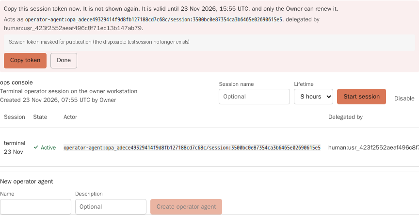
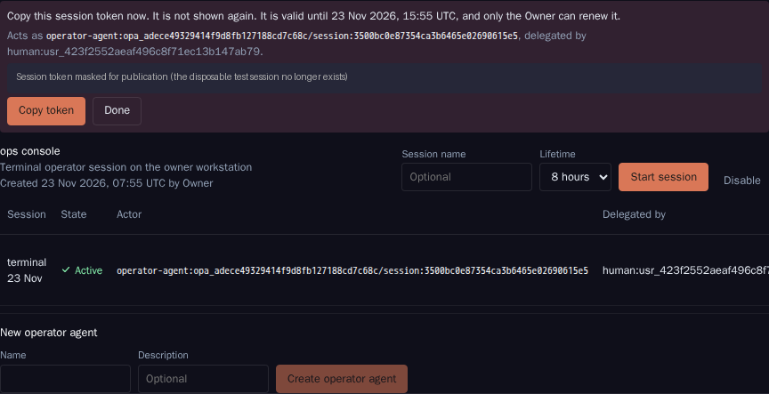
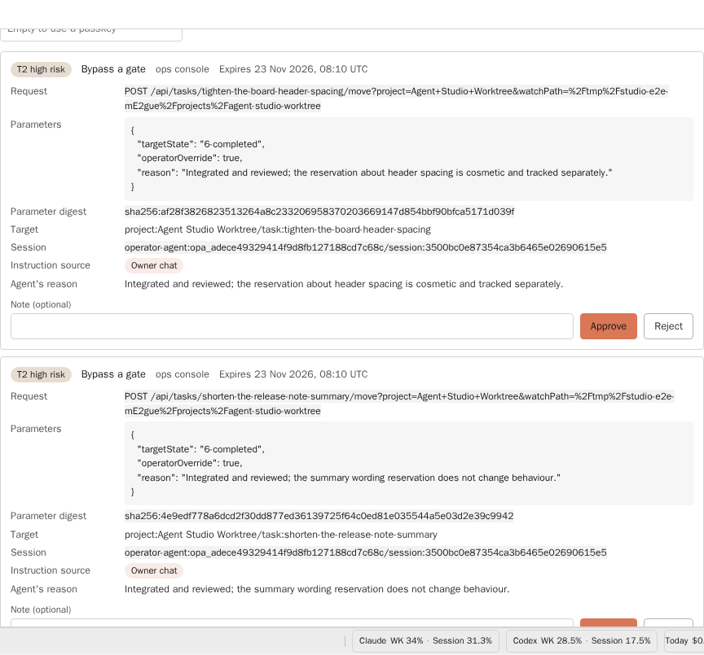
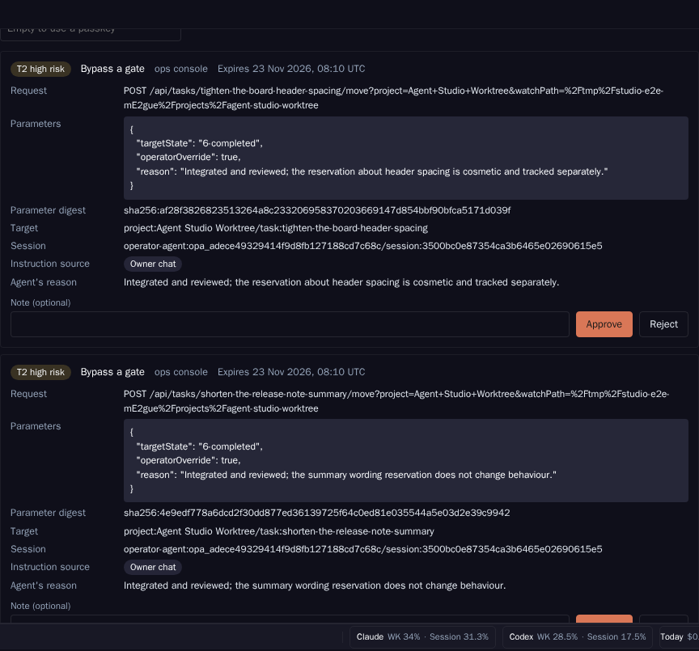
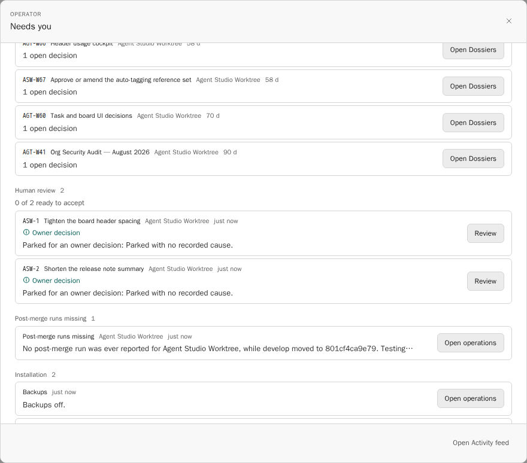
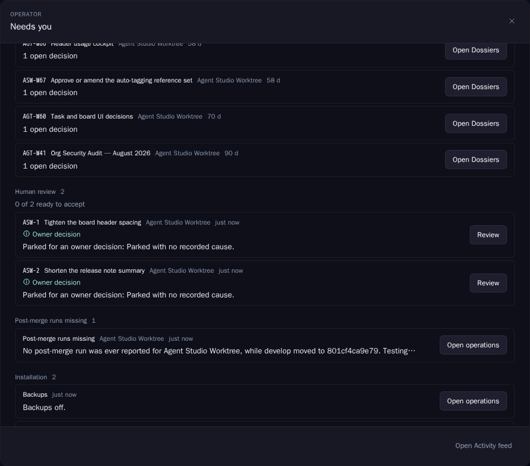
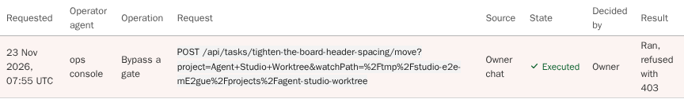
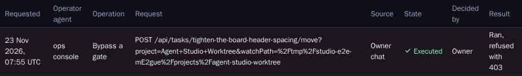

The owner wants to act as admin through the operator agent in his terminal without copying bearer secrets and without handing the agent the whole Owner role. This Dossier proposes a terminal sign-in that the owner confirms in the browser or on the phone with his second factor, a session bound to a key that cannot leave the device, a short list of named elevated action classes, one-tap batch confirmations in Needs you, and the order of work. It extends the security model of AGT-3353.
Status Decision pendingPhase Decision readySource AGT-3989ExtendsSecurity model (AGT-3353)Scope Terminal sign-in, device binding, elevated scope, step-up, misled agents
Scope
On 23 November 2026 the owner asked whether the session token for the operator agent should come from a sign-in with the second factor, so that the security mechanisms of the browser apply too, and how that token can be bound to the device. He also asked how he can be admin safely from an operator session, compared with the browser, and still be fast.
The trigger was concrete. On 22 and 23 November the operator agent could not carry out three instructions: accept nine integrated cards whose review left small reservations, archive a duplicate card without a delivery, and set the testing strategy of a project. Each refusal was correct under today's rules. The agent then changed the testing strategy by editing the project settings file on the server and restarting the API, on the owner's explicit instruction. That edit bypassed authorization and audit. This Dossier makes the legitimate path faster than the bypass.
Terms used throughout:
Operator agent and operator session: as in the security model and the operator agent setup guide. A session is a child credential (oas.*) of an operator agent principal (opa_*).
Elevated action class: a named, narrow set of catalogued operations that the owner enables for one session, for example "accept with override". It is not a role.
Device key: a key pair created on the machine where the terminal runs. The private key is meant never to leave that machine.
Step-up: the existing fresh second-factor proof on the owner's Studio session, valid five minutes and used once.
The repository is public. Like the security model, this Dossier names no host, address or account and describes gaps at class level. It changes no product code; the work is cut into implementation slices.
Current state
Much of the security model is already delivered: the operator agent principal with sessions of at most 8 hours (SM-1), the kill switch (SM-2), the operation catalogue with tiers and standing grants (SM-4), owner approval of one exact request with step-up (SM-5), host operations and certificates (SM-6), break-glass windows (SM-7), and TOTP, recovery codes and passkeys with session lists (SM-8). The gap is in the last metre: how a session reaches the terminal, what it is bound to, and which owner-level actions it may ever reach.
Topic
Today, checked on 23 November 2026
Consequence
Credential in the terminal
The owner's agent reads a named API token (api.*, service account, operator-agent role, all projects) from a file in the user profile. API tokens expire after 30 days by default and at most after 365 days. An operator session (oas.*) is the stronger alternative, but the Owner starts it in Settings > Access and copies the bearer, which is shown once, into a file.
Both are bearer secrets. Whoever holds the file holds the authority, on any machine, until expiry. Starting a session needs no fresh second factor; the signed-in browser session is enough.
Accept with override
A move to Completed with operatorOverride needs a written reason and the Admin or Owner role in the project (handler check on the projected role). For an operator session the policy step also classifies a move into Completed as gate.bypass (T2), so it first opens an approval request.
An approval cannot help: after the Owner approves, the handler still refuses because the operator-agent role is not Admin or Owner. Each card also needs its own approval and its own step-up.
Archive override
A move to Archive with archiveOverride requires a human principal whose role is Owner. For an operator session a move into Archive matches no catalogue rule.
No delegated path exists at all; the request is refused before any role is read.
Testing strategy
PUT /api/projects/{project}/testing requires the Owner role (workspace.administer). Its neighbours, such as review host requirement or maximum parallelism, need only project.settings.write.
For an operator session the route is not in the operation catalogue, so it is refused before any approval could be offered; behind that, no operator session ever reaches workspace.administer. The only paths were the browser or a direct file edit.
Workspace-bound operator agents
For a service account whose bindings are all on the workspace, the middleware skips the lookup of a card's project unless the account is an API token. An operator session of such an agent is therefore refused on every card write as "installation-wide".
The operator agent only works when bound per project. This is a defect next to the topic and is fixed in ES-2.
Owner-only project routes
Besides the testing strategy: the build profile (set, delete, validate), the review package, the project security files and their metadata, the server checkout sync and switch, and the gate capacity.
Some are true installation authority (build profile commands run on gate hosts); others are ordinary project settings that only happen to sit behind Owner.
Approvals in Needs you
Approval requests are listed in Settings > Access > Approval requests and announced in the operator feed and an optional push link. Needs you has no class for them.
The owner must know to look in Settings. On the phone the path is long.
The settings file edit of 23 November is not a product gap to close with more code; it is the symptom. Whenever the legitimate path is slower than editing a file on the server, an instructed agent will take the file. The recommended path below is designed to take less than two minutes of the owner's time for the whole episode.
Terminal sign-in
The terminal asks, the owner confirms where his second factor lives, and the terminal receives a session that only works together with its device key. This is the device authorization pattern (RFC 8628) that command-line tools of large cloud providers use, with two changes: the confirmation is a Studio step-up rather than a password entry, and the issued session is bound to a key (next section).
Proposed terminal sign-in. The owner's second factor is used where it already lives, in the browser or on the phone; the terminal never sees a password, a factor or a reusable secret. The example code is illustrative.
Flow
studio-op login creates or loads the device key (next section) and calls an anonymous start route with the public key, a device label the owner recognises (OS user and machine name, editable once), and the action classes it asks for. Studio answers with a user code of eight characters from an unambiguous alphabet, the confirmation link, a poll handle and a poll interval of 5 seconds.
The terminal prints the code and the link and renders the link as a QR code, so the owner can confirm from the phone.
The owner opens Confirm terminal sign-in in Studio. If he is not signed in, Studio's normal sign-in with password and second factor runs first. The page shows the code, the device label, whether this device key is already known, the binding kind (hardware key or memory key), the requesting address and whether it matches the browser's address, the requested classes and the window. The owner can remove classes but not add classes the terminal did not request.
The owner confirms with a fresh step-up: a passkey tap or an authenticator code. A wrong or missing factor confirms nothing.
The terminal's next poll, signed with the device key, receives the session. The session records the key thumbprint, the device, the classes, the confirming owner and the confirming browser session.
The code is valid 10 minutes and once. Five wrong code entries per owner within 15 minutes lock the confirmation page for 15 minutes. An unconfirmed start leaves only an expired record. The start route is throttled per address like sign-in.
Lifetime and renewal
Item
Proposed lifetime
Renewal
User code
10 minutes, single use
A new studio-op login
Operator session (routine tiers T0 and T1)
8 hours, unchanged (security model D7)
A new confirmation, or one-tap Extend in Studio with step-up
Elevation window (the named classes)
60 minutes by default, at most 4 hours, never past the session
One tap on the notice that appears 10 minutes before the end, with step-up. The agent cannot extend it.
Device key
Until the owner forgets the device or the key is lost
Not renewed; a new key is a new device
Separating the window from the session keeps the everyday session useful for observation and routine work while the strong authority lasts only as long as the burst of work it was opened for.
Revocation
End elevation removes the classes and leaves the session working at T0 and T1.
End session and the kill switch act as today (SM-2); the kill switch additionally ends every elevation and refuses pending sign-in starts.
Forget device removes a device key; a later sign-in from that key counts as an unknown device again.
Owner password reset, Owner disable, or revocation of the confirming browser session ends every session that browser session confirmed.
What the owner sees while it is active
A quiet header chip in Studio on every page and on the phone, for example "Elevated · ops console · 42 min", with End elevation and End session one tap away. Without elevation the chip is absent; routine sessions stay listed in Settings only.
A new-session notice, like the one SM-8 sends for new browser sessions, naming the device and the classes.
In Settings > Access the session row shows device, binding kind and key thumbprint, address at confirmation and last address, classes, uses per class against the rate limit, and the window end.
Device binding
A bound session is useless without the device key. The server stores the key's thumbprint with the session and, on every request, checks a short proof signed by that key over the method, the address, the time and a hash of the session token. This is the DPoP scheme (RFC 9449). A copied token file, a token pasted into a web page or printed into a log, or a token captured from a proxy no longer grants anything on its own.
Binding
How it works
Protects against
Does not protect against
Fit for Studio
Proof of possession with a hardware key (DPoP)
Non-exportable key in the TPM (Windows, Linux) or the Secure Enclave (macOS); per-request signed proof; server checks thumbprint, time window and a replay cache.
Theft of the token file, the backup or the sync copy; leaks into logs, prompts and web pages; reuse on another machine.
Any process that can use the key on that machine as the agent's OS user, including a misled agent.
Application level, works through the CDN and the reverse proxy unchanged.
Proof of possession with a memory key (DPoP)
A small resident studio-op agent process, like an SSH agent, holds a key generated in memory and signs on request over a socket readable only by the agent's OS user. The key dies with the process.
As above for copies of files and leaked tokens. The key is never on disk.
A process dump by the same OS user or root; a misled agent on the machine.
Same server check as the hardware key; the only option on hosts without a TPM.
Mutual TLS with a device certificate (RFC 8705)
Client certificate, ideally with a TPM or Keychain key; token bound to the certificate.
Same as DPoP.
Same as DPoP.
Studio's TLS ends at the CDN edge and again at the reverse proxy. The origin would see only a forwarded header and depend on the edge's certificate handling. Needs a device CA and enrolment.
Network address
Session valid only from the confirming address or range.
Use from a distant network.
Anyone on the same network or VPN exit; breaks on mobile networks, VPN changes and IPv6 privacy addresses.
Useful as a signal and as a display field, not as a binding.
Device fingerprint
Client-reported properties such as OS, machine name, hardware ids.
Nothing; the client chooses what it reports.
Any attacker who copies the values.
A label for the owner, never a check.
Per platform
Platform
Hardware key
Practical notes
Windows 10 and 11
TPM 2.0 through the Microsoft Platform Crypto Provider (CNG), ECDSA P-256, non-exportable, per user.
TPM 2.0 is a requirement of Windows 11, so it is normally present. TPM signatures are slow compared with software keys; the per-request proof therefore uses a session key that the TPM key certifies once at sign-in (see below).
macOS
Secure Enclave, P-256 only, non-exportable.
Available on Apple silicon and on Intel Macs with a T2 chip. Secure Enclave signing is fast enough to sign every request directly. Keychain persistence may need a signed helper binary; the wrapped key form can be stored in the agent user's home without a keychain entitlement.
Linux workstation
TPM 2.0 through tpm2-tss or a PKCS#11 module.
Present on most current laptops; access needs the tss group or a resource manager. Without it, the memory key applies.
Headless server or VM
vTPM where the hypervisor offers one (common on major clouds and on current hypervisors); otherwise none.
The sign-in itself works headless: the code shows in the terminal, the owner confirms on the phone. Binding uses the vTPM or the memory key. A host without either is still far better than today's bearer, because the key is never written to disk.
Two-level key
To keep requests fast on every platform, studio-op agent generates a fresh session key in memory at sign-in. Where a hardware key exists, that key signs a statement over the session key's thumbprint once, and Studio records both thumbprints. Each request is then signed by the session key in microseconds. A stolen session token is useless without the in-memory session key; a stolen session key is useless after the session ends and cannot start a new one, because a new sign-in needs the owner's confirmation and, for a known device, the hardware key.
What binding does not do
Binding answers "is this request coming from the device the owner confirmed". It does not answer "did the owner want this request". An agent on the same machine that was misled by text in a card, a log or a web page uses the same studio-op agent and produces valid proofs. That threat is handled by scope, confirmation, rate limits and audit in the next three sections.
Elevated scope
The elevated session is not a stronger role. It is the existing operator-agent role plus a short list of action classes that the owner names at confirmation. Each class maps to catalogued operations, a confirmation mode and a rate limit. Because the operation catalogue already refuses every write it does not name, a class can open exactly the routes it lists and nothing next to them.
Proposed authority layers. Only the two middle layers are new; the top layer is a hard refusal in the middleware that no role binding, class, grant or approval can lift.
First classes
Class
Operations
Mode
Rate limit
Conditions
cards.accept-override
Move from Human Review to Completed with operatorOverride and a reason.
Batch confirmation
30 items per hour
The card's delivery is integrated and its review ran; the item shows the review's reservation. A card without an integrated delivery is not batchable and stays a single T2 approval.
cards.archive-override
Move to Archive with archiveOverride and a reason.
Batch confirmation
10 items per hour
The card has no delivery on a protected branch; the item names the card it duplicates when the reason says so.
project.testing
PUT /api/projects/{project}/testing
Named for this session
6 changes per project per hour
Reason required; the old and new strategy are in the audit entry and in the project's settings history.
New classes are added only through a card that extends the catalogue, which is itself T2 (security model). Candidates for later: the review package of a project, and the server checkout sync of a project.
Permission changes
Testing strategy first. Move PUT /api/projects/{project}/testing from the Owner requirement to project.settings.write, like its neighbouring project settings. Owner and Admin keep it; an operator session reaches it only with project.testing. The route writes an audit entry with old and new value.
Override as a permission. Add project.cards.override (Owner and Admin by role) and let the move handler check it instead of the projected Admin or Owner role. The archive override checks the same permission instead of "human Owner". The written reason stays mandatory. An operator session receives the permission only for an item of a confirmed batch.
Review package may follow the testing strategy to project.settings.write; it changes how reviews are grouped, not what runs.
Stay Owner: the build profile (its commands run on gate hosts), project security files, the server checkout switch, gate capacity, and every installation route. They are not elevated classes.
Step-up
Today an approval covers one exact HTTP request, needs its own step-up and lapses 15 minutes after the request. That is right for rare, varied T2 actions. It is wrong for nine similar acceptances: nine factor entries, and with an authenticator app at most one usable code per 30 seconds.
Batch confirmation
The agent submits one batch: a class, a list of typed items (card, target lane, reason) and its instruction source. Studio checks each item's conditions at once and marks items that do not qualify.
Needs you shows one row, for example "ops console asks to accept 9 cards with override". The row opens a sheet that works on the phone: per item the card key and title, the review's reservation in one line, the agent's reason, and a link to the card. Every item is selected by default; the owner can deselect any.
One step-up confirms the selected items: a passkey tap on the phone or one authenticator code.
Studio executes the confirmed items itself, in order, as the operator session with approvedBy the owner and the batch id. Each item is checked again at execution; an item whose card changed since submission is skipped with a reason. The agent reads the result instead of replaying requests.
A batch holds at most 25 items, lapses 30 minutes after submission if undecided, and is single use. Rejecting a batch, or letting it lapse, executes nothing. The single-request approval of SM-5 stays for everything else in T2.
Fit with Needs you
A new Needs you class operator-approval.pending counts open batches and open single approvals. It is an acute signal only while something waits for the owner, and it disappears when decided or lapsed.
The existing operator feed event and the optional push message link to the same sheet. Receiving the push approves nothing.
Expiry of an elevation window ten minutes ahead appears as a quiet notice in the session chip, not in Needs you, because nothing breaks if the owner ignores it.
Misled agents
The operator agent reads untrusted text all day. Assume that some of it will tell the agent to do something the owner did not ask for, and that the agent may comply and may even state a false instruction source. The controls therefore do not rely on the agent's honesty.
Control
Effect on a misled agent
Classes named by the owner for this session
Outside the named classes, an elevated request is refused before any role is read. Injected text cannot add a class; only the owner's confirmation can, and only a class the terminal requested.
Batch confirmation with visible content
The owner sees the cards, reservations and reasons before anything happens. A batch that contains an unexpected card is visible as such.
Short window
The elevated authority is gone after 60 minutes by default, even if the session lives on.
Rate limits per class
A runaway loop stops at the limit with elevation-rate-exceeded. Three refusals within 10 minutes end the elevation and raise a Needs you row.
Reason on every elevated action
Each entry in the audit carries the agent's reason, the instruction source as stated, the batch or class, and the owner who confirmed. The reason is shown, never trusted.
Audit view per service account
Settings > Access > Operator activity filters elevated actions per operator agent and session, with device, class, batch, reason and result; exportable from the hash-chained audit.
Hard refusals
Access, grants, sessions, kill switch, break-glass, secrets, production, catalogue and audit stay out of reach of every token, whatever the class, grant or approval.
Device binding
A token the agent is tricked into printing or sending to a web page is useless elsewhere.
No file path around Studio
The agent's OS user has no write access to the Studio data directory. A direct edit of Studio state is break-glass only (SM-7) and a settings change without a matching audit entry raises a security finding.
The instruction source header stays useful as a display field and for routing (SM-5 marks untrusted sources). It is not a security boundary, because the agent writes it.
Threat model updates
Rows to add to the security model threat model. "Accepted" names what remains after the recommended controls.
Actor or event
Must never be possible
Accepted
Token file copied off the device (backup, sync, log, prompt, web page)
Any request with the copied token from another machine.
None for off-device use once the session is bound. Until then: the session's authority until expiry.
Another OS user on the same machine
Reading the token file, using the device key or the agent socket.
Root on the machine is out of scope; it equals owning the device.
Process as the agent's OS user, including a misled agent
Adding a class, extending the window, starting or renewing a session, confirming a batch, reaching any hard-refused route.
Use of the named classes within their rate limits until the owner ends the elevation; batch requests the owner then confirms without reading.
Sign-in code phishing (an attacker starts a sign-in and sends the owner the code or link)
A confirmation without the owner's fresh second factor; a confirmed session without its device and classes on display.
An owner who confirms despite an "unknown device" and "different network" warning gives the attacker a bound session with the classes he left selected, visible in the chip and revocable at once.
Stolen owner browser cookie
Confirming a terminal sign-in or a batch with the cookie alone.
Observation within the stolen browser session, as today.
Replay of a captured request
Executing it again: the proof's time window is 60 seconds, its id is single use, and it is bound to method and address.
None.
Agent driving the owner's browser (rejected option)
This option is not adopted, because a misled agent would act with the full Owner role under the owner's name.
Not applicable.
Security model rows that change: "Operator agent, prompt-injected or hijacked" gains "use an elevated class outside its window or beyond its rate" under Must never; Z2 in the trust zone table holds "a bound operator session and its device key; no bearer usable elsewhere"; the credentials table replaces "Operator session token" with "Bound operator session, 8 hours; elevation window, 60 minutes" and retires operator-role API tokens.
Alternatives
How the owner gets owner-level work done
W1 · Owner acts in the browser
The agent prepares the list; the owner opens each card or setting and acts with his own session. Strongest attribution and no delegation at all. Slow for batches, needs the desk or a long phone path, and invites the file-edit shortcut when the owner is busy.
W2 · Agent drives the owner's browser session
The agent controls a browser profile in which the owner is signed in, through a debugging port or an extension. Fast and needs no product change. Every action carries the owner's name, the agent holds the full Owner role including access management and secrets, and a misled agent inherits all of it. The cookie protections of the browser do not help against a client that controls the browser.
W3 · Elevated terminal session
Terminal sign-in confirmed with the second factor, device-bound session, named classes, batch confirmation in Needs you. Fast for the routine bursts, attributed to the operator agent with the owner as confirmer, narrow by construction. Needs product work in five places.
Criterion
W1 Browser
W2 Agent drives browser
W3 Elevated terminal session
Owner time for the 22 and 23 November episode (inferred)
About 12 to 20 minutes: nine cards, one archive, one setting
About 1 minute
Under 2 minutes: one sign-in confirmation and one batch tap
Actor in the audit
Owner
Owner, although the agent acted
Operator session, confirmed by the owner
Authority a misled agent can reach
None
Everything the Owner can do
Named classes within the window and rate limits
Theft of a credential file
Not applicable
Browser profile theft gives the Owner session
Useless without the device key
Works from the phone
Yes, with long paths
No
Yes: confirmation and batches
Product effort
None
None, but contradicts SM-1 and D11
Medium to high, in slices
Terminal sign-in
S1 · Copy the bearer from Settings (today)
No new code. The secret travels through the clipboard into a file, the start needs no fresh factor, and the token works anywhere.
S2 · Terminal-started device sign-in
The terminal shows a code; the owner confirms in the browser or on the phone with step-up. Nothing secret travels through the owner's hands. Known pattern; exposed to code phishing, which the device and network display and the typed code mitigate.
S3 · Browser-started pairing code
The owner starts in Studio and types a short pairing code into the terminal, which exchanges it with its public key. Resistant to code phishing, because the owner starts it; slower, and awkward when the terminal is remote and the owner is on the phone.
Device binding
B1 · None
Bearer as today. A copied token works anywhere until it expires.
B2 · Proof of possession (DPoP), hardware key where present, memory key otherwise
Application-level binding through every proxy; hardware keys on Windows, macOS and most Linux devices; a resident agent with a memory key elsewhere.
B3 · Mutual TLS with device certificates
Equivalent protection, but TLS ends at the edge, so binding depends on edge configuration, and a device CA must be run.
B4 · Address or fingerprint
Cheap and weak; breaks legitimate use and stops no one on the same network.
Recommendation
Make the elevated terminal session the default way, and make it faster than any shortcut
Adopt W3 as the default: terminal-started sign-in (S2) confirmed in the browser or on the phone with a passkey or authenticator code; sessions bound by proof of possession (B2) with a hardware key where the platform has one and a memory-held key otherwise; the elevated authority as named classes on top of the operator-agent role, with a 60-minute window; batch confirmation in Needs you for override acceptance and archive override; the testing strategy as the first route moved from Owner to a project permission.
Keep W1 for everything outside the classes: access, secrets, production, installation. Reject W2.
The most important reason: the episode that led to a settings file edit becomes a two-minute, fully audited path that a misled agent cannot widen, and a copied token stops being worth anything.
Order: the two permission changes come first because they are small, independent and unblock the owner's current work through the browser and approvals. The bound sign-in follows, then classes and batches, then the retirement of operator-role API tokens.
Evidence
Evidence is classified as observed (read in the repository or produced by the running product on 23 November 2026), inferred, or proposed. The four figures and the request results come from one Playwright capture on a fresh networked monolith built from this task's worktree (commit 801cf4ca9), served by the networked-https profile behind a localhost TLS proxy. The Owner was bootstrapped with a TOTP factor, created the operator agent ops console with the operator-agent role on the project, and started a session in Settings > Access. Two fixture cards were placed in Human Review by the Owner and a third card served as the duplicate. No API response was mocked. The capture spec, the request and response record and the run log are delivered with the task results; the stack and its credentials were discarded after the run.
Light

Bearer to copy by hand
Dark

Evidence. Start session issues the operator session as a bearer token that the Owner must copy now, shown once, valid 8 hours; the panel asks for no second factor before issuing it.Light: captured from the networked-https capture stack described above, element crop of the Operator agents panel. The token line is masked in the image for publication.Dark: captured , same stack, crop and mask.
Light

One request per card
Dark

Evidence. Two override acceptances by the operator session appear as two separate "Bypass a gate" approval requests, each with its own Approve button and its own second-factor decision.Light: captured from the same stack, element crop of the Approval requests panel.Dark: captured , same stack and crop.
Light

No approval group
Dark

Evidence. While the two approval requests wait, Needs you lists the two cards under Human review but has no group or row for the approval requests that block them.Light: captured from the same stack, element crop of the Needs you dialog scrolled to the cards. The full list of 34 rows, recorded by the spec, contains no approval row; the Dossier rows above come from this repository's own docs.Dark: captured , same stack and crop.
Light

Approved, then refused
Dark

Evidence. After the Owner approved one override acceptance with a fresh second factor, the approval was used and the request still ended with 403: "Ran, refused with 403".Light: captured from the same stack, element crop of the Decided and expired table.Dark: captured , same stack and crop.
Request results from the capture
Request by the operator session
Answer
Accept card 1 with operatorOverride and a reason
403 approval-required, operation gate.bypass, tier T2, an approval id
Same request again with the approved approval id
403 operator-authority-required: "operatorOverride needs the Admin or Owner role in this project." The card stayed in Human Review; the approval is recorded as used with result 403.
Archive the duplicate with archiveOverride and a reason
403 operation-not-catalogued, no approval offered
Set the testing strategy to balanced
403 operation-not-catalogued, no approval offered; behind the catalogue the route needs workspace.administer, which no operator session reaches
The same override acceptance by an operator agent bound on the workspace instead of the project
403 project-scope-denied: "The operator agent role cannot make installation-wide changes." (first capture attempt)
Each block recommends a working option. Implementation slices use the recommendation unless a recorded operator decision selects another option.
ES-D1 · Default way to do owner-level work
Options: W1 owner acts in the browser; W2 agent drives the owner's browser session; W3 elevated terminal session.
Recommend W3, with W1 for everything outside the named classes. W2 gives a misled agent the full Owner role under the owner's name and undoes SM-1.
ES-D2 · Terminal sign-in
Options: S1 copy the bearer from Settings; S2 terminal-started device sign-in confirmed with step-up; S3 browser-started pairing code.
Recommend S2, with the device, binding kind, address match and an unknown-device warning on the confirmation page, a 10-minute single-use code and a lockout after five wrong entries. Keep S1 only for a session without elevation classes until the migration slice retires it.
ES-D3 · Device binding
Options: B1 none; B2 proof of possession with a hardware key where present and a memory key otherwise; B3 mutual TLS with device certificates; B4 address or fingerprint.
Recommend B2 with the two-level key (hardware key certifies an in-memory session key). Address and device label are display and anomaly signals only.
ES-D4 · Unbound hosts
Options: A allow the memory key on hosts without TPM or Secure Enclave; B require a hardware key for any elevation class; C allow unbound sessions on such hosts.
Recommend A. The memory key never reaches disk and defeats file theft, which is the threat binding addresses. The session row shows the binding kind so the owner knows which he confirmed.
ES-D5 · Lifetimes
Options: A session 8 hours, elevation window 60 minutes by default and at most 4 hours, renewed by one tap with step-up; B elevation as long as the session; C elevation per batch only, no window.
Recommend A. B leaves strong authority with an agent that keeps reading untrusted text all day; C makes the named-for-session class (testing strategy) impossible.
ES-D6 · Shape of the elevated scope
Options: A named action classes on the operator-agent role, chosen at confirmation; B a new bindable role "operator elevated"; C bind Admin to the operator agent.
Recommend A. A role is standing authority on every session of the principal; classes are per session and per window. C would add secret writes and production deploys.
ES-D7 · Routes that move from Owner to a project permission
Options: A the testing strategy now and the review package after it, both to project.settings.write; B every Owner-only project route; C none, elevated sessions get workspace.administer for named routes.
Recommend A. The build profile, project security files, checkout switch and gate capacity stay Owner because they decide what runs on gate hosts or what the security record says. C breaks the rule that no token reaches workspace.administer.
ES-D8 · Override authority
Options: A a permission project.cards.override held by Owner and Admin, granted to an operator session only per confirmed item; B keep the role check and the human-Owner check; C let the operator-agent role hold it.
Recommend A. B leaves the approval path dead; C turns a confirmation-level action into standing authority.
ES-D9 · Confirmation mode per class
Options: A batch confirmation for accept with override and archive override, named-for-session for the testing strategy; B batch confirmation for every class; C named-for-session for every class.
Recommend A. Acceptances and archives are many, similar and hard to undo; a strategy change is single, reversible and rate-limited.
ES-D10 · Who executes a confirmed batch
Options: A Studio executes the typed items on confirmation, as the operator session with the owner as approver; B the agent replays each request with an approval id, as SM-5 does.
Recommend A. Items are typed operations, not raw requests, so there is nothing to digest-match; execution is immediate and needs no replay window.
ES-D11 · Needs you
Options: A a class operator-approval.pending for batches and single approvals; B keep approvals in Settings only.
Recommend A. It is the owner's single list of what waits for him, and it works on the phone.
ES-D12 · Operator-role API tokens
Options: A stop issuing new operator-role API tokens once bound sign-in exists, warn on existing ones in the security view, refuse them 30 days later; viewer tokens for scripts remain; B keep both; C refuse at once.
Recommend A. It removes the 30-to-365-day bearer from the owner's profile without breaking scripts that only read.
ES-D13 · Direct edits of Studio state
Options: A only inside an SM-7 break-glass window, and a settings change without a matching audit entry raises a security finding; B allowed on owner instruction; C technically prevented on the host.
Recommend A. The owner keeps a recorded emergency path; the everyday shortcut becomes visible instead of silent. C is not possible against a host administrator.
Implementation
Eight bounded slices are defined in workbench.json, in delivery order; each dependsOn names only earlier slices. Each has a measurable acceptance target. This Dossier changes no product code.
Slice
Depends on
Acceptance target
ES-1 Testing strategy as a project setting
none
An Admin and an Owner set the strategy, an operator session without project.testing gets 403, each change writes an audit entry with old and new value.
ES-2 Override as a permission
none
An approved single T2 override acceptance or archive override of an operator session completes; without approval, without reason, or by a Developer it is refused with a typed reason; a workspace-bound operator session can write cards.
ES-3 Terminal sign-in confirmed with step-up
none
studio-op login yields a session only after an Owner confirmation with a fresh factor; expired, reused and wrong codes are refused; lockout after five wrong entries.
ES-4 Proof-of-possession binding
ES-3
A bound session's token without a valid proof is refused; replayed, stale or wrong-address proofs are refused; median added server time per request below 2 ms.
ES-5 Hardware device keys
ES-4
On Windows with TPM, macOS with Secure Enclave and Linux with TPM the device key is non-exportable and certifies the session key; the session row shows the binding kind.
ES-6 Elevated action classes and window
ES-1, ES-2, ES-4
Only confirmed classes admit their operations, within the window and rate limits; header chip, End elevation and kill switch work; audit entries carry class, reason and device.
ES-7 Batch confirmation in Needs you
ES-6
A batch of nine acceptances is confirmed with one step-up from a 390 px viewport and executed by Studio; deselected, changed and non-qualifying items are skipped with reasons.
ES-8 Retire operator-role API tokens and flag direct edits
ES-3, ES-4, ES-7
New operator-role API tokens are refused, existing ones are flagged and refused after 30 days; a settings file change without an audit entry raises a security finding within 10 minutes.